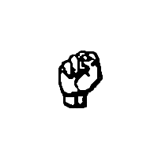
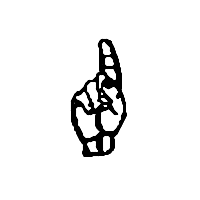
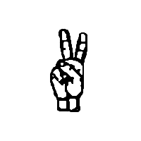
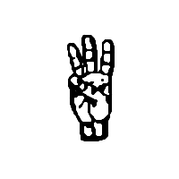
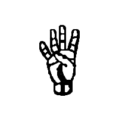
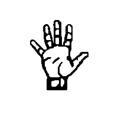
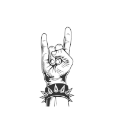

Use your gestures to controll anything. Try triggering some loops in the browser or connect it to a MIDI input and control whatver you want.
| Gesture |  |  |  |  |  |  |  |
|---|---|---|---|---|---|---|---|
| Loop | Resting gesture | Drums 1 | Drums 2 | Bass 1 | Melody 1 | Melody 2 | Melody 3 |
| Playing? |